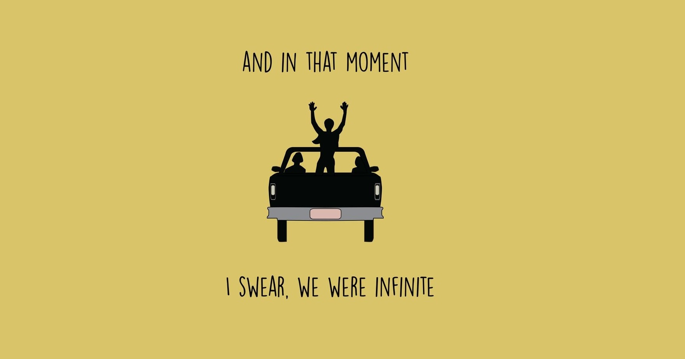

Mark L. Dela Cruz
The Perks of Being a Wallflower: Just some random thoughts~
"And in that moment, I swear we were infinite."
Have you ever sensed things that gave you the feeling, whether good or bad, to just disappear from the world? At times I wished I did disappear because of the events that happened to me. I wished to feel peace in times of need but my senses would lead me to go numb from seeing what I wanted to, or feeling when I needed to; like my body would just shut down and become robotic. The Perks of Being a Wallflower offers me that escape from reality, to have friends during the time when I don’t have any. The Perks of Being a Wallflowers offers readers a story, a world in the eyes of Charlie as he progresses through first year of high school. Faced by the recent suicide of his best friend, and the lingering past of his Aunt Helen.
The book kicks off with an ethereal sequence that puts you in a dreamlike trance both the writing and the characters. Letting you know right off the bat that these characters are going through some bad things but also setting the standard for the rest of the book. The book feels insanely powerful, the writer is incredible for creating a setting that is lively and meticulously detailed.
The Perks of Being a Wallflower also well conveys the feeling of solitude and isolation. Occasionally, you’ll read some informal writing and grammar mistakes that just reminds you that this book is a set of letters written by a teenager, it just breathes an air of authenticity into the story. Finally, when the story starts picking up and Charlie finds his way into the world, you are graced by the feelings of happiness and the once sad memories just disappear.

Is it a romance? Not really. Is it a sad book? Some people say it isn’t. What I think the writer wants is the characters to struggle and have development. What I really enjoy in a good Young Adult or Fantasy books is when the funny or detached character gets really serious. Like when a weak guy becomes stronger or when a person starts achieving his dreams, and I like it when the characters develops their personality, and their real self. The story starts of with Charlie being a wallflower then, he finally ends the story saying that he’ll participate in life. During that path of development, Charlie forges relationships, memories, mistakes, redemption, and little hints of romance.
The story feels like a guy who really have mental problems and have that eat away at him. The problems each character’s face feels realistic. The author doesn’t spoon feed you with exposition and you have to focus to find little details. Every character has a lore and reasons why they act the way they act. It’s a book about social anxiety, isolation, abuse, bullying, and self-development.
What message the story conveys? This is the questions I always think is different for each person but for me, the message the author is trying to send is that so many bad things happen to so many good people. But that didn't make them bad people. (Aunt Helen became a bad person. Sam and Charlie didn't.) So, it shows us, that we decide. "We accept the love we think we deserve". So, accept yourself and love yourself. The Perks of Being a Wallflower promotes and celebrates inclusion and tolerance by demonstrating how people may thrive when they are accepted for who they are, as well as how difficult life can be for those who are neglected or abused.
There’s a lot to enjoy about this book. I say all these words but at the end of the book, I have a real nice and cozy feeling. I find it easy to relate to Charlie and be invested in the story and his character. I can’t recommend this book enough.